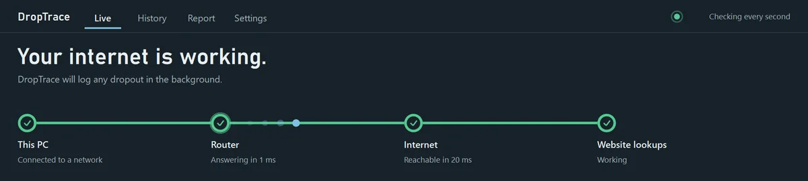
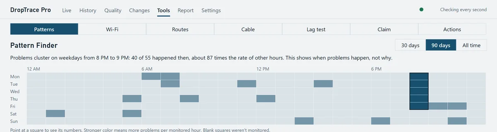
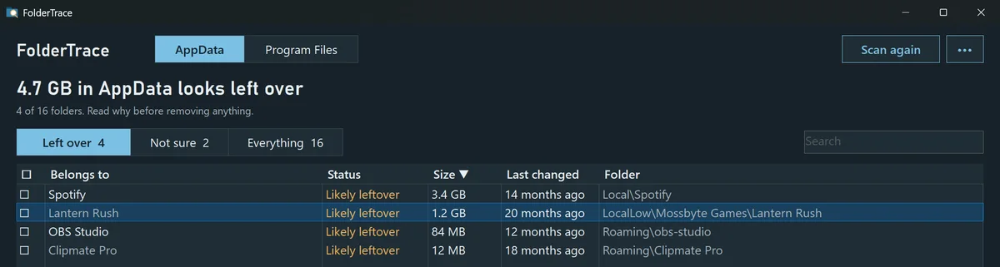

DropTrace
Free · open source

Checks your connection every second and logs each time it drops. It shows whether the problem was your PC, your router, your provider, or website lookups, and builds a report you can send them.
Get it on Microsoft Store
DropTrace Pro
$15 one-time

Everything in DropTrace, plus tools for the problems that aren't full outages.
- Packet loss and jitter tracking
- Pattern Finder shows when problems cluster
- Wi-Fi, route, cable and lag tests
- Provider Claim Kit for credits and repairs
Get it on Microsoft Store

AppData fills up with leftovers from programs and games you uninstalled years ago, under names that make no sense. FolderTrace tells you which program each folder belongs to, so you can clear out the ones you don't need.
- Labels folders In use, Likely leftover, or Not sure
- Shows the evidence behind every label
- Checked folders go to the Recycle Bin
Get it on Microsoft Store
For games that stutter even when your FPS looks fine. HitchTrace watches your PC while you play and points to the likely cause of each hitch, such as a background app, disk activity, a driver, or a Windows setting.
- Frame-time graph that catches every hitch
- Shows what else was busy when it happened
- Checks common PC settings that cause stutter
Follow on Ko-fi for updates